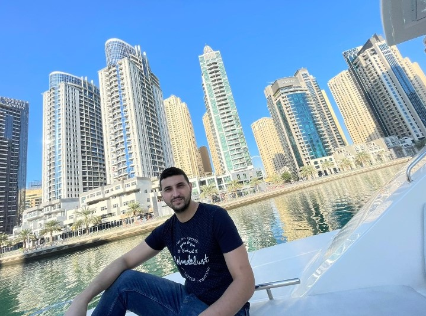
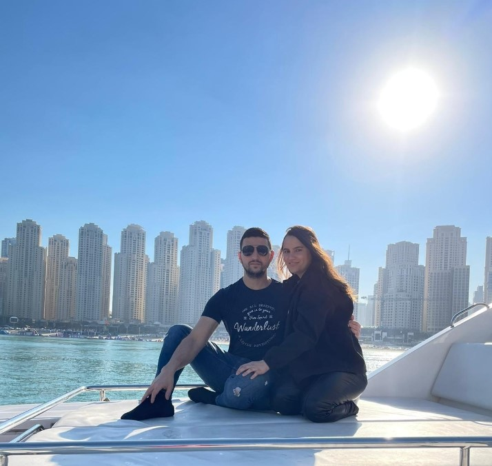
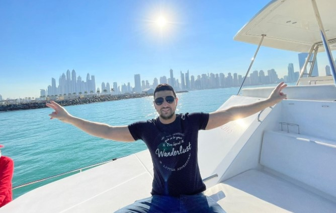
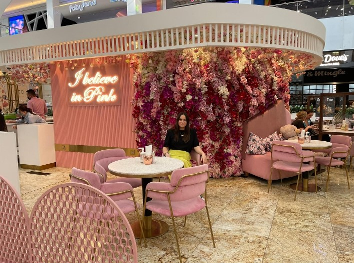
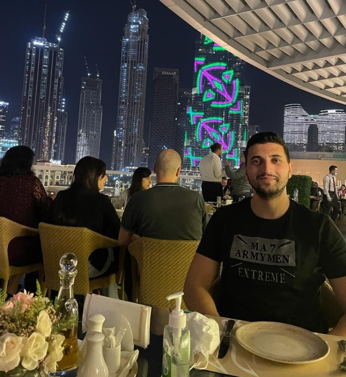
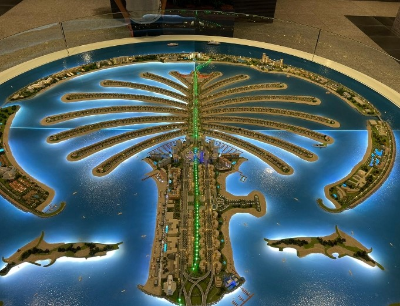

Dubai travel guide


most tourist places in dubai
In this site you can find explanation about dubai most Tourists places.
- Burj Khalifa known as Burj Dubai before its inauguration, is a skyscraper in Dubai, United Arab Emirates.
It is the tallest artificial structure in the world, standing at 829.8 m (2,722 ft).[4] - The Dubai Fountain is the world's largest choreographed fountain system set on the 30-acre manmade Burj Khalifa Lake,
at the center of the Downtown Dubai development in Dubai, United Arab Emirates. It was designed
by WET Design, the California-based company responsible for the fountains at the Bellagio Hotel Lake in Las Vegas.
Illuminated by 6,600 lights and 25 colored projectors, it is 275 m (902 ft) long and shoots water up to
500 ft (152.4 m) into the air accompanied by a range of classical to contemporary Arabic and world music.
[5] It was built at a cost of AED 800 million (USD $218 million). - The Dubai Frame is an iconic architectural landmark in Zabeel Park, Dubai. Standing 150m tall, it offers extensive views to old
and present Dubai. The Dubai Frame has been open to public since 2018 and is one of the most popular
tourist attractions in the city. - Dubai Miracle Garden is one of Dubai's signature creations. Launched on Valentine's Day 2013, it sits in the
heart of Dubai with a total area of .72,000 sq. M. The 150 million flower gardens are arranged
in colorful arches and patterns. The Dubai Butterfly Garden, home to 15000 butterflies, is a unique feature.
The Dubai Miracle Garden won two Guinness Records for the largest vertical garden in
2013 and the world's largest floral sculpture in the shape of an Airbus A380 in 2016 - The Dubai International Financial Centre (DIFC) is a federal financial free zone situated in the Emirate of Dubai,
United Arab Emirates. The DIFC was established pursuant to UAE Federal Decree No. 35 of 2004,
UAE Federal Law No. 8 of 2004 and Dubai Law No. 12 of 2004. The DIFC occupies a physical
territory of approximately 110 acres. It has its own legal system and courts distinct from those
of the wider UAE, with jurisdiction over corporate, commercial, civil, employment, trusts and securities law matters. - The Palm Islands are two artificial islands, Palm Jumeirah and Palm Jebel Ali, on the coast of Dubai,
United Arab Emirates. As at November 2014, only Palm Jumeirah has been completed. This island takes the form
of a palm tree, topped by a crescent. When complete, Palm Jebel Ali will take a similar shape; both islands
will be host to a large number of residential, leisure and entertainment centres and will
add a total of 520 kilometres of non-public beaches to the city of Dubai - The Global Village is claimed to be the world's largest tourism, leisure and entertainment project.
It is the region's first cultural, entertainment, family and shopping destination. Every year, it has over 5 million
visitors over an area of 17,200,000 sq ft (1,600,000 m2).[24] It is located at Sheikh Mohammed Bin Zayed Road (E 311); Exit 37. - Dubai Marina is a district in Dubai, United Arab Emirates. Dubai Marina is an artificial canal city, built along
a two-mile (3 km) stretch of Persian Gulf shoreline.[21] When the entire development is complete, it will
accommodate more than 120,000 people in residential towers and villas.[22] It is located on Interchange 5 between Jebel Ali
Port and the area which hosts Dubai Internet City, Dubai Media City, and the American University in Dubai. The first
phase of this project has been completed. Dubai Marina was inspired by the Concord Pacific Place development
along False Creek in Vancouver, British Columbia, Canada.
my photos from dubai





